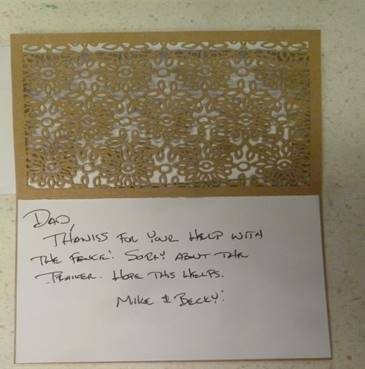

Friday, April 01, 2016
I woke a little before 7am and as normal read for a while in the scriptures. Mae didn’t sleep very well last night so I tried to let her sleep in. When I went into the front room Kylan was up. We started talking and soon Ashley came in. The three of us visited until Mae got up. I prepared breakfast of egg omelet in a large frying pan. It took a little longer to cook but it turned out ok anyway. After breakfast we played games with Kylan and Ashley. Kylan then walked down to where he could watch the airplanes land and take off. He has an app that allows him to see the approaching and take off schedules off mainly commercial airplanes. Ashley and Mae went for a walk and enjoyed visiting together. I worked on the new computer trying to learn how to find and store documents. When they returned Mae prepared lunch and we started another game. We just got started when Scott, Mishelle and the twins came. We visited with them and the game got put away. We have enjoyed having Kylan and Ashley with us for a while. After they left we went over to Costco looking for a seasoning that Shellie recommended to use when cooking salmon, which I will be doing on Monday. They do not stock any of that brand in any of the Costco stores in Utah. We, therefore, went to Wal-Mart where we found another brand and hope that it will be ok. After getting home we watched a show on Netflix that Kylan and Ashley recommended. It was ok, but I had a hard time hearing and following the dialog. We were late getting to bed.
Saturday, April 02, 2016
Both Mae and I slept well last night. We prepared our breakfast in time to eat in the living room as we enjoyed the 1st session of General Conference. After the session ended, I went to Home Depot to check on materials for a project I am helping Mike do in their back yard. I returned home just before the 2nd Session of General Conference started. We again ate lunch while enjoying conference. Following that session I brought my tool trailer up from the storage lot and got tools ready to go to Mikes. We then watched the Priesthood Session of General Conference. It was as wonderful as the other sessions and we were thrilled when President Monson addressed the conference. I believe he is about 20 years older than I and so he is getting quite old. It is sad as they grow old, but we have sure enjoyed having that great man as our chosen leader and Prophet. I called Bishop Mullins concerning Marianne’s problem with her washer. He is quite concerned as to how to help her. I will call Richard Flint and see if the two of us can work on the washer together. Richard was not home but I left a message for him. I helped Mae set up the dining table so that we will have that ready for Monday. Mae is also editing my March journal for me. She is sure a wonderful wife and sweetheart. Somehow I have duplicated my journal files and Mae and I have spent almost an hour getting that straightened out. This new computer is a learning experience!
Sunday, April 03, 2016
We both slept well last night getting up about 8:30. I started the 2nd book of “The Book of Mormon Made Easier” by David J. Ridges. Meanwhile Mae got up and started work on my March 2016 journal entries. With the crash of our lap top we lost a lot of data but with David M. our grandson, much of it was recovered. While Mae took time to do her hair, I got February and March printed off and put in my Journal binders. We really enjoyed the
Conference session this morning, and was especially thrilled when President Monson spoke. I do sustain him with all my heart as Prophet, Sear and President of The Church of Jesus Christ and accept that he is the only one holding all the KEYS of the Priesthood today. I laid down for a while after the morning Session. After I got up Mae had lunch ready, so we ate and then watched the afternoon and closing session of April 2016 General Conference. Again it was a very enjoyable conference with Elder Holland closing with great encouragement for us to continue on. Mae then laid down and tried to take a nap but phone calls soon got her up. I worked on my journals and I believe that I have 2016 up to date and backed up to a hard print out and on the cloud. We watched a show on Netflix that was fair but nothing special. Bob called and wanted us to come over and watch “Big Country” with him but we declined. I went through the movie listing and found very little worth watching. We went to bed shortly after 9PM.
Monday, April 04, 2016
I didn’t sleep the best last night but Mae got a phone call after we went to bed so she didn’t get to sleep until after mid-night. She got up about 7am and I got up about 7:30am. After breakfast we got busy around the house and then set our goals and effort toward getting ready for Mae’s siblings and their spouses to arrive between noon and dinner at 1pm. Working together we were ready. Kim and Jeanenne were unable to come due to sickness. We were especially grateful when Deanna came with Bryce. The salmon turned out very good and I sure appreciated Shellie’ instructions as to how to prepare and cook it. We enjoyed a very nice dinner and especially enjoyed the visit that we had with each other after dinner. When everyone left for their homes, Mae and I finishing the cleanup, then Mae got us some left over’s for our super. We watched a detective show on Netflix titled “Laura” which was quite interesting. We then did up our dishes and entered this entry before going to bed, quite tired.
Tuesday, April 5, 2016
I missed setting the alarm and so we didn’t get up until after 7am. We quickly got our things put together, fixed an egg sandwich and put things into the pickup and left for American fork. It was just after 10am that we got to Mike and Becky’s. Mike and I went to Home Depot and bought material to build new gates to their back yard. We worked until almost 6pm before quitting for the day. I was quite tired when we quit. After dinner I started this entry and then Mike had me try out his massage chair, which really did work good and helped me. Mike, Becky, Mae and I played a game of rook at which Mae and Becky won. We went to bed about 10:30pm.
Wednesday, April 6, 2016
We had breakfast before Mike and I got started on his gates. We got the main gate on the west side built and finished before lunch. After lunch I took a 15 minute nap but I didn’t go right to sleep like I normally do as I was thinking of a way that I might get some money on consignment for my tool trailer and tools without losing access to them for a few years. I did sleep for a while and then Mike and I built the gate for the east side. We got that finished and then built a stand for Becky’s grape vines. We just have a little more to do before that is finished. We quit and picked up all the tools before going in for dinner. I again used Mikes massage chair and it really helped me again. We played four games of Rummykub with Jessie and then Mae and Becky challenged Mike and I to another game of Rook but tonight Mike and I beat them. We had some Yogurt, strawberries and Granola before we got ready for bed. I also entered my journal before going to bed.
Thursday, April 7, 2016
We woke about 6am, Mike and I got started about 7:30 adding wire guides to the grape trellis we built yesterday. We were just finishing when Mae called us for breakfast. We quickly finished up and came in to eat. Mae had cooked trout and fried eggs, they were very good. After breakfast I went up and used Mike’s massage chair. That sure felt good. We packed and got headed for home just before 9am. We stopped at Costco and purchased gas before heading home. I took the wrong road and it took us a couple of extra miles to find the Freeway entrance. As we approached the North side of Salt Lake we had a tire tread break off. I was able to pull off the freeway onto a safe area. With the tools I have in the trailer we jacked up the trailer and removed the tire. When the tread tore off, it ripped the fender well off and bent it up quite badly, so I had to remove it. When I went to mount the spare tire I found it was low of air. I had to disconnect the trailer from the pickup, have Mae stay with the trailer and I took the tire to get it filled. The next exit took me into Beck Street where I found a Diesel Truck shop so I stopped and they filled the tire for me. I continued on Beck Street to 3rd West and 400 North, turning west and right back onto the freeway entrance. I mounted the tire and we were soon on our way again. Mike had an appointment with his brother, David, that morning, so passed by, but as he did, he saw us over to the side of the road so he called to see if we needed his help and if so he would get off the next exit and come help us. I told him we were okay, so he went on. He called us later and told us he wanted to pay for the cost of the tire. We stopped in Clearfield where we bought some groceries at Tom’s Market. We also bought us some chicken for lunch and some Yogurt. We come on home where I unloaded our clothing we had taken with us. Both Mae and I were tired so we lay down and took a nap. I woke with a cramp in my leg and that brought me up in a hurry. Marianne Ray wants me to have someone assist me in giving her a blessing for her health. I got Brother David Presnell to assist me. Mae also went with me and after giving Marianne a blessing Mae and I stayed and gave her a Home Teaching and Visiting Teaching message. After coming home I finished this entry before we played a game of Rummy and went to bed.
Friday, April 8, 2016
As I was studding this morning, I read “A Voice of Gladness” given by Marvin J. Ashton in the April 1989 General Conference. It really lifted me and gives me encouragement to just continue trying, but to give Thanks to God for my many blessings. I saved this article in my Church folder and also printed off a copy that I will take to Marianne Ray. Mae gave me a haircut before I took my shower. I made some calls to find prices on a tire for my trailer and to price a new fender. Costco had the best price on the tire and the fender would cost $150.00 to order one in. I think I will try to straighten the old one out. I worked on it until noon when we had lunch. I took a nap and then went to Costco and bought the tire. I went to Bowen Lumber where I bought a 1¾” X 3’ W X 6’8” H solid core door, plus a 2” X 10’ X 16’ board for $50.00. While there I got a call from Costco telling me that they had my tire ready. When I returned home Mae was working in the yard digging weeds out of the grass and her flower garden. We watched a show that was ok, while we ate our dinner. We had started another show but it was all in Spanish and so we switched to the other show. After the show ended Mae and I finished playing the game of Rummy that we started last night. I won.
Saturday, April 9, 2016
I read the Priesthood lesson for tomorrow and really enjoyed it. I made breakfast for us this morning. .I prepared an egg omelet and it turned put very good. After breakfast I worked on my trailer but I think that I am going to order a new fender, I have straightened some of the fender but there is one part that is pretty bad and I am afraid that it won’t straighten. I started repairing the holes that got torn on the trailer. I needed some parts so went up to Auto Zone but they didn’t have what I wanted and so I went to Home Depot. That took the rest of my morning. I took Mae over to Dianne Graf’s where she, Dianne and Camille Smith went to Salt Lake to a cooking class. I went over and visited with Bob. Anyway we watched two videos. We don’t visit very much because of Bob’s hearing but he enjoys having someone there. It was after 5pm when I left. Mae text me that they were still eating and would still be a while. I came on to Roy where I filled the car with gas and stopped at Del Taco and bought a Steak Bean Burrito for my dinner. Just as I drove into our driveway, Mae called and said that they were at Dianne’s. I went over and got her. We stopped at Kohl’s where Mae bought a blouse. I entered today’s journal entry while Mae started preparations for tomorrow’s dinner. Sandi and Gary will be coming out to have dinner with us tomorrow.
Sunday, April 10, 2016
I woke up at 6:30 this morning. I reread the Priesthood lesson and again was thrilled at the great message concerning the fact that The Church of Jesus Christ is Christ’s church. It does not belong to any mortal man or men but it was organized and led by those chosen, called by and controlled by the Lord. I then worked on my Diary adding some information that I feel should be added to clarify some of the details that were taking place with my job while at Commercial Security Bank. I took a nap before we went to church. I really enjoyed the Testimony meeting as well as Priesthood and Sunday school classes. Bishop Mullins talked to Mae and I, asking us to meet with him in his office after the regular Block meetings. I came home for a few minutes between Priesthood and Sunday school to turn the oven on. While I was at home I texted Sandi to let her know that we had an interview right after meetings, so we would be just a little late getting home. However, after meetings when we went to the Bishops office he was not there. We couldn’t find him so we came on home. Sandi and Gary were there but hadn’t been here very long. Mae had a nice dinner almost ready. After eating we visited and played some games. Garry hadn’t played either Marbles or Rummy and so we taught him both games. After Sandi and Gary left for home, I Mae and I looked at our yard to see what plans we need to figure on there. We also walked down to Gifford’s home to see what is ready to do there. After getting back home I worked on my journal while Mae called and visited with Jeff, mainly about the reunion plans. We went to bed about 10PM.
**Monday, April 11, 2016
Mae didn’t sleep very well last night and so I got some breakfast and took the pickup over to Dee’s Service where I got it inspected and renewed the registration. I went over to Western Trailer Service and checked on parts and costs for a new fender for my tool trailer. I then went on home and found that Mae had slept until 9:30 before getting up. I checked with two other shops about rebuilding the old fender and both advised that I get a new one. While out I got one of our propane tanks refilled. I went back to Western Trailer Service and had them start on the new fender. They will call me when it is ready. Depression set onto me, but I went down to Gifford’s where I weeded the raspberries and put the trellises in the grow boxes for the tomatoes. Bishop and Sister Mullins stopped and visited with me about the four of us going to some of the new Temples here in Utah that we haven’t been to. Also they would like to take a couple of days and go camping. This evening Mae and I looked over our calendar and picked some possible dates for those activities and gave them to Bishop Mullins to see how those dates will work for them. We read an inspiring article in the April 2016 Ensign, by Elder Kim B. Clark “The Redeeming and Strengthening Power of the Savior’s Atonement”. We then watched the movie on Netflix “The Enemy Down Under” starting Robert Mitchum. We really enjoyed that movie and are going to recommend it to our children. I filled out my journal entry and we soon went to bed.
Tuesday, April 12, 2016
Mae slept better last night. I wish that there was something I could do to help her but I am at a loss as to know what to do. My concern is that much of her problem stems from my depression and concerns for our financial ability’s. She also has so many concerns about our children and others in our Ward, plus friends and acquaintances. Somehow she just needs to relax, ???? I worked on my trailer most of the day. I have the side panel damages looking fairly good, but I am still having some concerns with the electrical problems. This evening Mae and I were going to go Home Teaching, but Sister Leah Nielsen isn’t feeling well and the Hilton’s are not home. Mae wanted to get on the computer so I went into the front room and watched a show on the TV.
Wednesday, April 13, 2016
I got up at 7:30am but Mae hadn’t slept well again last night. I tried to be quiet so that she could sleep. Bryce and I went to Salt Lake to the Veterans Administration to check on my eligibility to receive medical benefits. To my surprise I was accepted on the program. As we drove back, Bryce brought up that Irven just keeps insisting that Deanna is wrong in following the Doctors treatment for the cancer that has attached her. Deanna told him that they have sought the Lord’s guidance through prayer, so for now she feel this is the way she should go. Bryce is upset that Irven and Sandy are still trying to convince them that they are wrong. When we got to Clearfield, we stopped at the commissary on Hill Air Force base. I bought some mixed vegetables and some yogurt. Bryce also bought a package of mixed vegetables but as we paid for them I used my Debit card. When we got to the car, Bryce asked how much he owed me for the vegetables. I told him that they were paid for, but he insisted that he pay for his. He put $3.00 in my coat pocket. I didn’t feel he should pay anything as he had driven from Willard and taken his time to help me, but that is Bryce for you! After getting home, Mae made me some lunch and I took a short nap. It has been raining most of the day so I haven’t been able to do anything outside. Mae did some visiting this afternoon and this evening we went visiting Sister Lemon and Brother and Sister Hilton. Sister Lemon is having heart problems and the Hilton’s are both in very bad shape. After getting home, I finished a game of Hearts on the computer and then filled out this entry.
Thursday, April 14, 2016
I didn’t sleep very well last night but we still got up and went to the Temple. We didn’t know of any others that were going to the Temple with us, but Klaus and Judith Decker met us at the Temple. We enjoyed the session and then went to the cafeteria and ate lunch. It has rained most of the day. After returning home from the Temple, I went down and got Randy as he wanted to try out our T-Zone machine. It didn’t work for him so he doesn’t think he is interested in purchasing it. After taking Randy back home I picked up Ron Graf at his home. We went over to Sportsman Warehouse and bought some fishing tackle. Mae had dinner ready when I got home. This evening we watched a show on DVD “The Christmas Hope” on our TV in the bedroom. Although we have seen it once before, it was still a heartwarming story. Mae is sure a special wife and sweetheart. I sure have to work hard to be worthy of her love.
Friday, April 15, 2016
I woke at 6am this morning and read for almost an hour in my scriptures. The weather is cold and raining and so I find it hard to get very interested in working outside. I got a call from Western Trailer asking me to bring my trailer down to them so that they can match up the new fender for the left side with the one the right side. When I left Irven had called Mae and when I got back home she had just got off the phone with him. I don’t know what to do about him as he is sure hurting feelings in his relentlessness in trying to convince everyone to his opinion. Mae went over to Scott’s to tend their children while they attended a funeral of a friend of theirs. Mae had made me some lunch so after eating I took a nap. I then brought in drinking water from our distiller. After that I vacuumed the floors for Mae. I next played 2 games of Hearts of which I won both games. I next worked on my Five Year Diary getting several more entries edited. It was almost 6PM when Mae got back from Scott’s and grocery shopping at Winco. We prepared dinner and ate it in the front room while we watched a show on the BYU channel. Scott sent us some Fertilizer that he had left over. It seems to really be working good for them so we will try it. Our lawn sure needs something to help it out.
Saturday, April 16, 2016
I got up at 6:30 this morning, but Mae hadn’t slept very well and so she slept until about 7:30am. After breakfast I spread the fertilizer on the grass. Mae and I then planted some pansies. I then went down to Gifford’s and planted some potatoes. Mae has kept busy cleaning house and getting food ready for dinner tomorrow. Bishop and Sister Mullin’s came by and visited for about an hour or more about plans, that the four of us will go to some of the New Temples in the Utah area, also about going camping together. Mae and I did take a nap after lunch. This afternoon I dug some strawberry starts from Gifford’s and planted them in a special pot. We will see how they do. After dinner this evening we had Judy and Claus Decker come over and we played games. I helped Mae get the table set up for dinner tomorrow. Emily will be playing a violin solo in our Ward’s Sacrament meeting tomorrow and then David and his family will come to our place for dinner.
Sunday, April 17, 2016
I woke well refreshed at 6:30am and started my normal day. This morning I read from the Priesthood and Relief Society Manual, lesson chapter 8 “Taking the Gospel to All the World”. I reflected of our being able to go on a mission to the Philippines. What a wonderful experience it was for us. Mae also slept well last night. To find out that little bit of information in the morning is sure comforting to me. When I find out that she hasn’t slept well, I feel so helpless and concern that I might be the cause. That girl is the love and light of my life with only one exception and that is The Lord and Savior Jesus Christ. We enjoyed a simple breakfast and after eating, I helped Mae with some of the preparations for dinner today. I turned on the TV and listened to the “Mormon Tabernacle Choir broadcast” and enjoyed the Spirit it brings with it. I worked on my journal and Diary entrances while I have a few minutes before getting ready to attend Sacrament meeting. (Note: As I entered my Diary entrance of October 22, 1974, I indicated that we bought a new freezer. We are still using that freezer today.) During our Sacrament meeting I had the privilege of helping administer the Sacrament. Also, Emily played a violin solo, accompanied by Sister Janice Barnes. They played Amazing Grace and did a marvelous job. I was so proud of her that I had trouble keeping control of my tears. Following Sacrament meeting we came home, with all of David’s family, for dinner. Mae had prepared a wonderful roast dinner with all the trimmings, plus appetizers before the meal. We all enjoyed the dinner. After dinner we just visited. David and Conner played a game of Chess using David’s timer and David won. David and I played a game using my timer and I was able to stale mate that game. Conner and I played and I won him. Tyler then played me a game and he won due to me running out of time. The timer really changes the game. We visited for a while before they left for home. It has been a wonderful day. We had some Peach Cobbler left over so Mae and I took some over to the Jackson’s as they just came back yesterday, from being in St. George. We then took a dish over to Mary, our neighbor on the North East of us. After coming home I entered the rest of this entry, while Mae mainly talked to Marianne. It’s about time for bed now.
Monday, April 18, 2016
Mae didn’t sleep much last night so I tried to let her sleep in for a while this morning. After Mae got up about 9am we had breakfast. She had already done some of her regular Monday morning washing during the night. I cooked breakfast for us when she got up. I then started some of the items that I had on my list for today. When I tried to find the nozzle for the hose, I couldn’t locate it. Our hose also had a break in it, so I went down to Home Depot and bought a new nozzle and I repaired the clamp for the hose. Mae called and said that Bishop and Ravae were about ready to go for a ride that we had planned with them. I quickly came home and we ate a sandwich before going with them. We drove up to the South Fork of the Ogden River to the Cauze campground. It is not opened, but we walked down into it anyway. We saw several deer, also a wild turkey. We also picked some watercress to bring home. It was a very enjoyable afternoon. This evening we watched a show on Netflix, “Charade” with Carry Grant and Audrey Hepburn. Although we have seen it before, it is still a cute show.
Tuesday, April 19, 2016
We both slept pretty well last night, but we were still late getting up. After breakfast I did some work on my journals while Mae was busy with other house work. I have just done some little odd jobs, hoping that Wasatch trailer would call me, telling me that my trailer fender is ready for me to pick up. Scott, Mishelle and Kylan came over about 4:30pm and Kylan brought me a chess board he made for me in his Shop Class. It has 2” squares for my chess pieces that we bought while we were in the Philippines’s. It is really nice and fits the pieces perfectly. This evening Mae was on the phone so I turned on the TV and watched two short Western movies, then when I couldn’t find anything else worth watching I chose a movie on Netflix “Hiaha; a Dog Tale”. Mae came in and watched a few minutes but when it became late we turned it off and went to bed.
Wednesday, April 20, 2016
I got up at 6:30 and Mae got up about 7am. We both slept fairly well last night. It may seem like a little detail to add in, but it is becoming rarer the older we get. Mae prepared oatmeal cereal for our breakfast. Something depressed me this morning and has hung on most of the day. I called Wasatch Trailer and they told me that my trailer wheel well would be ready about 11am. I had several errands to run so I loaded the ladders in the back of the pickup. I then started checking for a RV/Marine batter for our camper and found that there are only 2 or 3 companies that build batteries so I should check on the warranty and the price and buy the cheapest one. About the time I was ready to leave, I noticed that the secondary water was on and I had to shut off all my sprinklers. I took all the metal (tongue & yokes from under the trailer and other pieces of metal to get rid of) over to the salvage yard, took the ladders over to Scott’s and bought some items at J & J Garden shop before I went to get my fender. They still didn’t have it ready for me. That upset me and as I drove home I became more and more upset. I ate some lunch and then took a nap. Our water has been off due to a broken water line, but as of tonight they don’t know where the break is. We had the Sister Missionaries here for dinner. We did do some work in the yard before quitting for the day. We finished watching our show that we started last night.
Thursday, April 21, 2016
I woke early concerned about the water. One thing it is doing is having us appreciate our ancestors, especially the convenience of instant running water with just the turn of a valve. After breakfast both Mae and I took a bucket bath before leaving for the Timpanogas Temple with Bishop and Sister Mullins. We arrived at the Temple just in time to be on the 11am session. It was a very nice session and we sure enjoyed the beautiful Temple. After the session we stopped outside long enough to get a picture before returning home. We stopped at the Golden Corral where we ate and visited. Bishop Mullins is sure busy with phone calls from members of our Ward. He had four calls that came in while we were in the Temple and two or three calls more before we got home. When we got home our water was on, so we are very happy about that. We took a nap and then I called Wasatch Trailers and they do have my fender ready to pick-up. We will do that on our way to S.L. to attend a special open house for Tayler Paige’s graduation from Utah State, in interior design. We enjoyed being there to support her in her academic achievements. It was almost 9pm when we got home and we were both tired and ready for bed.
Friday, April 22, 2016
I got up about 7:30 this morning and Mae got up at 8:30am. I made an egg omelet for breakfast while Mae did her exercises. After breakfast I wanted to apply some weed control, but due to the windy condition, that was not possible. I cleaned out both of my sprayer tanks. I wanted to work on the trailer but I needed my voltage meter, which yesterday I had blown the fuse. I went up to Auto Zone to buy a fuse but none of their fuses would fit. Their suggestion was either an electrical outlet company or maybe Radio Shack. I called Mae and had her look on the internet for a Radio Shack. She found one in the Five Point’s area in Ogden, but the one in Clinton has closed up. I went into Ogden to Whitehead Electric, but after a lot of searching, they didn’t have a fuse. They suggested that I go to an electronic supply company on 27th and Wall Avenue. I went there, but they did not have one that size. They suggested that I go to Radio Shack, so without any other suggestion I went to the Five Point area. There I found the Radio Shack. They did not have a fuse of the exact voltage strength, but did have one that would protect my voltage meter until I could get the correct fuse. As a package of four fuses was only $3.75, I purchased the package and then they ordered me the other package which will be shipped to our home address in a couple of days. From there I stopped at the grocery store in that area to buy some items for Mae, and they also had some dark ground cover bark, so I bought a sack of that. When I got home I added the bark to the front flower bed to finish covering it. We had run, out with the bark I had bought previously, and so this finished the job. Although I did get some things done, I felt that most of the day was wasted running around. We ate dinner and watched a show “How to Steal a Million” which was quite cute.
Saturday, April 23, 2016
We got up and had to hurry to attend a track meet at David High in Kaysville. Tyler was running in the hurdles at 8:45am and then later after 1pm he would participate in the long jump. Tyler came in 2nd or 3rd in the hurdles and was quite unhappy about that. We didn’t stay for the long jump and haven’t heard how he came out in that. About 2:30pm we took our T Zone machine down to Randy’s so that he can try it out. He may be interested in buying it from us for $1,000. I cannot use it due to my eyes and Mae doesn’t take the time to use it. It would sure help us out financially at this point. After setting the machine up at Randy’s, we took Randy with us and went up to Lael and Neal Wall’s, where many of the cousins on the Porter side met for a party to eat, visit and keep the family together. It was late when we got home, showered and got to bed.
Sunday, April 24, 2016
We slept well last night and enjoyed a relaxing morning before attending Church. Sacrament meeting was quite special. Following the Sacrament, Brother Thomas Harper spoke using sign language and Sister Harper translated for us. Following Brother Harper, Brother Dick Terkelson introduced him and his wife, before he gave his talk. He and Sister Terkelson are a new couple who recently moved into our ward and the Monte Vista Mobile Home Park. After his talk, their daughter, Jennifer West, played a Violin Solo. Sister Janice Barnes accompanied her and did a remarkable job. I spoke to Sister Barne’s after meeting and told her how talented she is. Sister Terkelson then gave the concluding talk. I also enjoyed the Priesthood class and the Sunday school class. After coming home and having some lunch, we went visiting some in our Ward and then went over to visit Bob. Bob played the show, “Once in a Life Time”. Although it had one bedroom scene that could have been left out, the rest of the show was very good. After getting home I caught my journal up before we went to bed.
Monday, April 25, 2016
Mae didn’t sleep very well last night and so after mid-night she started cleaning house and doing her normal Monday morning washing. She finally came back to bed at 3am. I tried to be quiet so as not to waken her. She finally got up about 9am. I did get the lawn mowed before it started to rain and it rained and hailed quite hard so it stopped me from doing much outside. Mae went to a Daughter’s of the Utah Pioneers meeting this morning. I worked on my Diary transfer to the PC.
Tuesday, April 26, 2016
Both Mae & I slept good last night. After breakfast, Mae started working on the files on the computer desk to sort them out and get them organized better. I worked on the tool trailer most of the day. I couldn’t find the wire connectors and the crimper tool that I thought that I had bought the other day when I purchased the battery for the camper. The only thing I can conclude is that I left them at the store. Bishop Mullins stopped by to tell us that he and Revee won’t be able to go to the temple with us for our ward temple day on Thursday as a niece is coming from Florida and they will meet her and take her to lunch in Richfield. In talking with him, he told me that he had a crimper tool that I could borrow – so I went to his house to get it. Sister Scheers called Mae to ask if she could take her to the doctor as she is in a lot of pain and thinks it is her kidneys. Mae took her and Arnold to the Instacare in Roy. They were told that there would be a 2 ½ hour wait, so they told Mae to come home and they would call her when they are finished with the doctor. Both Mimi and Arnold are in their 90’s and use walkers. After a good spaghetti dinner, Mae continued to work on the files, and I watched a couple of Western movies. Mae typed this entry for me while I was getting ready for bed.
Wednesday, April 27, 2016
We were late getting up. After breakfast I finished work on my trailer. We got things packed up and left for Mike’s before noon. We stopped at Costco in Bountiful where I fueled the car. While I was getting gas, Mae went into the store and bought some chips, some Granola bars and a frozen Yogurt. We got to Mike’s about 3pm. Mike and Becky had already left and Mae and I spent the night with Mattie and Jessie. After dinner the four of us played games until bed time.
Thursday, April 28, 2016
I woke up at 5:30am and let Mae sleep a little longer. Mattie and Jessie got themselves ready for school. Mae got up and got some breakfast ready. I took my shower and after breakfast and the girls left for school, Mae took her shower. Mike left me a Thank You note with $150.00 in it for my helping him with the gates. I wrote a note to him expressing my gratitude for him (he is the only 1 out of 6 that has a Temple Recommend now) and returned $50.00 asking him to give it to Becky to help with the dental work she needs. The $100.00 covers the tire that I blew on the trailer. Mae and I were ready to attend the Temple when we left. As we drove home, we called Mike and wished him a Happy Birthday. We got home in time to stop at our house and empty some of the things in the trunk and go to the Church House where we met the Shaw’s and took them with us to the Temple. Following the Temple Session, the four of us went to the cafeteria and ate lunch before coming home. After Mae and I got our things unpacked, I did some figuring on a water storage rack for Irven and Sandy. Mae was tired and so she took a nap and slept about 1 ½ hours. When she woke up, we called Connor and wished him a Happy Birthday. After dinner Mae read for a while then we went into our bedroom to watch a movie on VHS, “The Fugitive” starring Harrison Ford. It was quite a suspenseful show. Bob had loaned it to us the other day when we were visiting him. Iren called part way through the show and talked for some time.

Friday, April 29, 2016
I got up at 6am and let Mae sleep until 6:30am. Mae gave me a haircut and then I took my shower and prepared breakfast while Mae did her exercises. We left the house about 9am, stopping at the post office, at Harman’s for some groceries and at the Credit Union to deposit some money in our account. We next went to Garf’s and they followed us to Murdock’s Chevrolet where we left our car for them to service it. We rode with Ron and Diann from Murdock’s to the Bountiful Temple where we attended an Endowment Session. Diann had names for us to take through. After the Temple the four of us went out to Chuck-A-Rama for lunch. Ron and I got talking about going fishing and maybe it went too far and I think we will go both Monday and Tuesday. Mae and I took a nap when we got home. I helped Mae get some things ready for this evening as we have invited David and Pat Presnell over this evening. When Dave and Pat came, we played the first game of marbles. Dave had problems remembering the moves, plus he and I seemed to have very bad hands. Mae and Pat won without any challenge and I became a little irritated with Mae sending us back so often. Mae and I seem to be a little on edge with each other tonight. That isn’t normal. Well it’s time to go to bed.
Saturday, April 30, 2016
We slept in not getting up until late. After some breakfast, I started looking on the Web to be able to reserve a camp site at East Canyon Reservoir. I called Ron Garf to be sure that he still wanted to go up Monday morning, stay overnight and come home late Tuesday afternoon. I didn’t get an answer and was not sure just what to do. I went to go outside and Ron had just come to the door. Ron is excited for us to go, so we made reservations, then we started getting the camper and boat ready. We worked on them until after 5pm when Ron went home. Marianne Ray called Mae and needed someone to pick up a prescription for her. Mae and I went and got it, then we did some shopping mainly for things I need for the fishing trip. Mae is sure a special wife and sweetheart.